Verslag
Verslag
Titel: Verslag 2
Dit verslag werd opgesteld door:
- Naam: Deputter Pablo
Studentennummer: 20205440
Email adres: Pablo.Deputter@student.uantwerpen.be
- Naam: Etman Max
Studentennummer: 20204398
Email adres: Max.Etman@student.uantwerpen.be
Aantal man-uren besteed: 15 uur
Moeilijkheidsgraad: 9 /10
Inhoud van de oplossing
De oplossing bestaat uit de volgende bestanden (de volgende oplossingen maken gebruik van de vorige bestanden):
Verschillende links:
Verslag 1
Verslag 2
Home
Verslag
Program counter
Voor de eerste opdracht werd er ons gevraagd een Program Counter te construeren voor het Datapath sinds dit hier een essentieel onderdeel hier van is. We hebben ons voor een groot deel gebasseerd op de counter van de vorige opdrachten, maar hebben enkele
outputs en inputs toegevoegd voor latere, volledige Datapath. We hebben onze 16-bit register gebruikt en hier enkele klokcyclus de waarde één aan toegevoegd. Zie onderstaande afbeelding van onze Program Counter voor meer details.
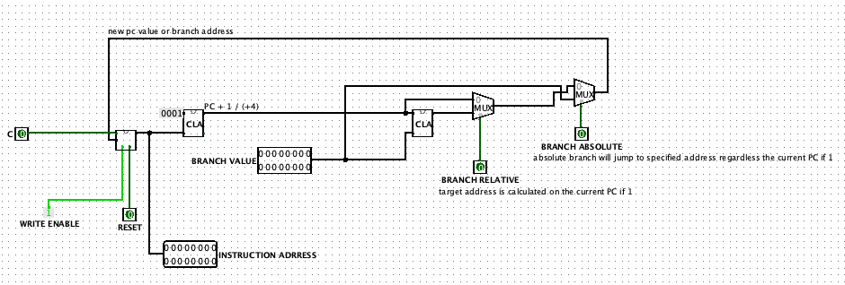
DataPath
De tweede opdracht van dit project en ook de grootste was het "kleine" Datapath. Voordat we hieraan begonnen wist ik niet goed
wat ik allemaal moest doen, maar nu snap ik het voor een groot deel.
ALU
Voordat we aan het Datapath konden begonnen moesten we onze ALU bijwerken want deze werkte niet volledig. We gebruikten de ingebouwde libraries van Logisim om alles te vervangen zodat onze ALU optimaal werkte. Zie hier onder voor een screenshot van onze bijgewerkte ALU.

Register File
Voor het debuggen was het noodzakelijk om voor elke register een 16-bit output te voorzien. We gebruikten terug de 16-bit register en basseerden ons op de reeds gemaakte Register File van de vorige opdracht. Deze register heeft een DATA input om de kiezen welke waarde er wordt geschreven in register rd. En heeft ook twee outputs die de waarden van register rt en rs respectievelijk tonen. Met de WRITE input kan er gekiezen worden of der in de registers gescheven kan worden en met de RESET input worden alle 16 registers ge-reset.
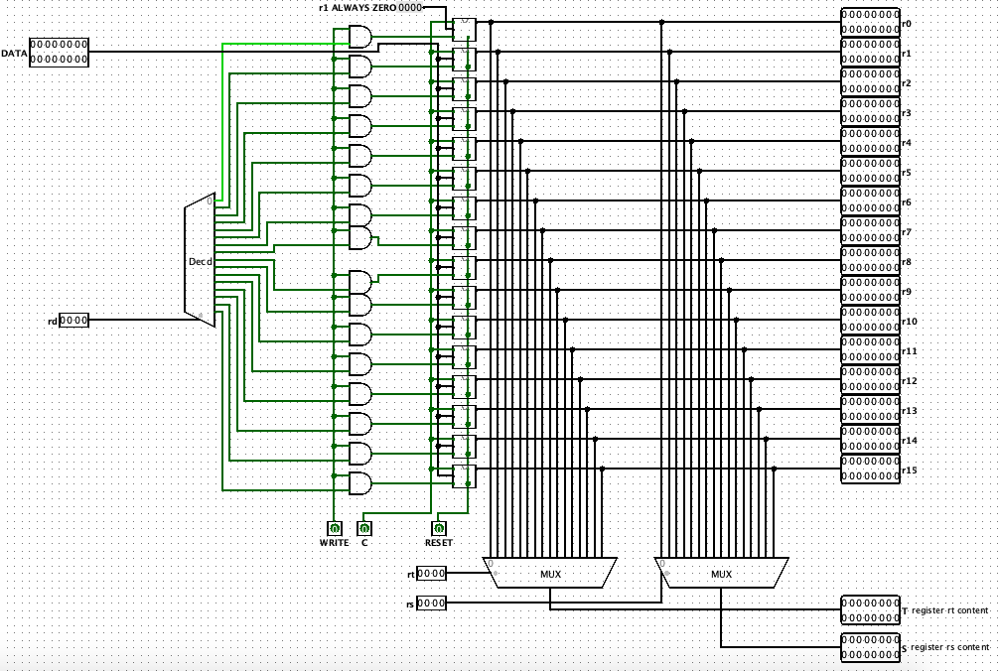
Control Unit
Ik besloot een aparte Control Unit te maken die de eerste 4 bits (rt code) en laatste 4 bits (OP code) als input kreeg. Dit vond ik veel makkelijker en was ook veel overzichtelijker in het uiteindelijke Datapath. Aan de hand van de tabel werd de Control Unit zo gemaakt dat wanneer de OP code op 0000 de instructie ZERO wordt waargenomen, hierna wordt er gekeken naar de rt code. Als deze ook 0000 is hebben we een ZERO instructie en is de ALU code output van de Control Unit
gelijk aan 0000. Wanneer we te maken hebben van een Unary Operation staat de OP code op 0001 en wordt er gekeken naar de rt code en wordt de juiste ALU code naar de output gestuurd. Bij de andere operaties wordt er enkel gekeken naar de OP code en wordt de weer de juiste ALU code naar de output gestuurd. Wanneer we niet te maken hebben met een LW of SW zijn de andere outputs niet van belang. Hieronder kan je alle outputs bij een standaard operatie van de Control Unit zien en de tabel waar we gebruik van gemaakt hebben.
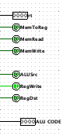
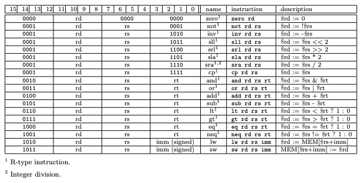
Wanneer we wel te maken hebben met een SW of LW kijken we naar de rt code en OP code gebeurt er iets heel anders in de Control Unit.
Bij een LW / 1010, staan de output MemToReg, MemRead, ALUSrc en RegWrite op één. De functies zijn respectievelijk: zorgt er voor dat de output van de RAM naar de DATA input van de register file wordt gestuurd, zorgt er voor dat de LOAD functie van de RAM op 1 staat en de waarde in de RAM wordt dus naar de output van de RAM gestuurd, de tweede input van de ALU is gelijk aan de rt code bit extended naar 16-bits als deze op 1 staat en RegWrite zorgt er voor dat er in de registers van de register file kan geschreven worden. De rt code is de offset-waarde die in de ALU gaat. MemWrite en RegDst hebben geen doel bij een LW. Bij zowel een LW en SW operatie staat de ALU code standaard op ADD / 0100.
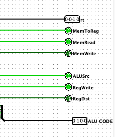
Bij een SW / 1011, staan de output MemWrite, ALUSrc, RegDst op één. De functies zijn respectievelijk: zogt er voor dat de STORE functie van de RAM op 1 staat en er kunnen dus nieuwe waarden in het RAM geheugen geschreven worden, ALUSrc zorgt er voor de tweede input van de ALU is gelijk aan de rt code bit extended naar 16-bits als deze op 1 staat en wanneer RegDst op 1 staat zal de rt waarde gelijk zijn aan de rd waarde en deze wordt dus naar geschreven in het RAM geheugen. De rt code is weer de offset-waarde die naar de ALU gaat. MemToReg, MemRead en RegWrite hebben geen belang bij een SW. Weer is de ALU code op ADD / 0100 gezet.
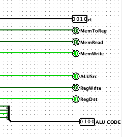
Hieronder een afbeelding van de volledige Control Untit.
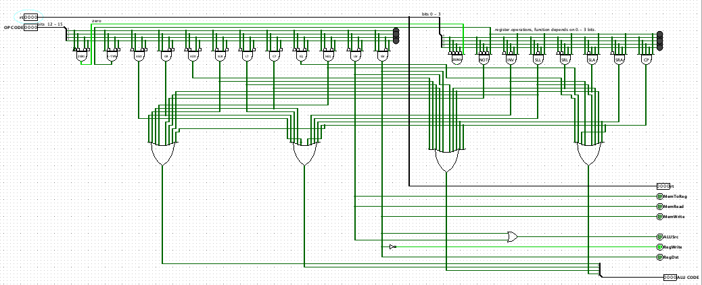
DataPath
Nu moesten we enkel nog alle componenten in ons main circuit met elkaar verbinden. Eerst werd de Program Counter met de clock en reset verbonden. De BRANCH outputs lieten we op 0 want deze moesten we nog niet gebruiken.
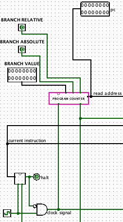
Hierna werd de output van de Program Counter met onze Instrucion Memory verbonden. De rt code en OP code hiervan gaan naar de Contol Unit, de rest gaat naar het Register File.
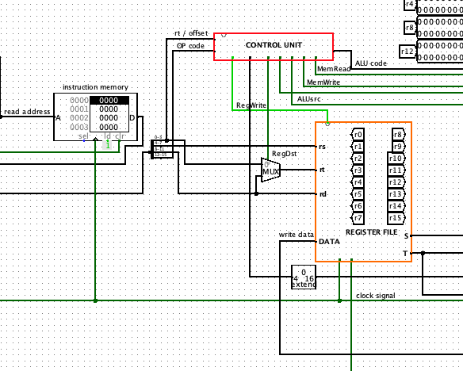
Ten laatste worden alle draden met de juiste multiplexors, ALU inputs, RAM inputs, ... verbonden.
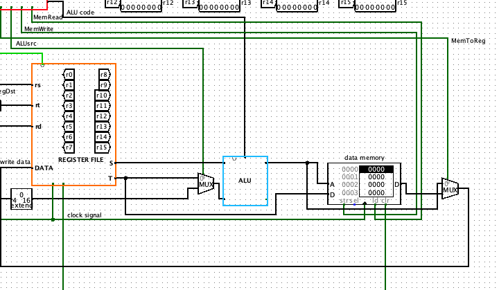
Hieronder is een afbeelding van het volledige DataPath.
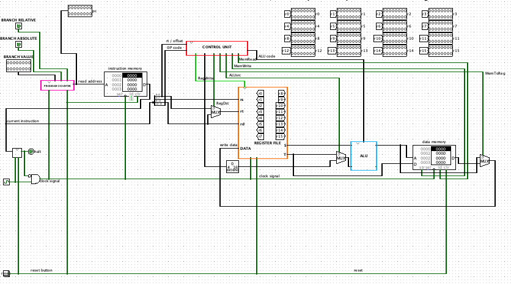
Testen
Ons DataPath voltooide alle testen die in de opdracht werd meegegeven. We hebben geprobeerd zelf testen te maken, maar kregen steeds deze error.
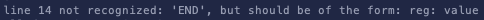
{kind=link}
{kind=link}
{kind=link}
{kind=link}
{kind=link}
{kind=link}
{kind=link}
{kind=link}
{kind=link}
{kind=link}
{kind=link}